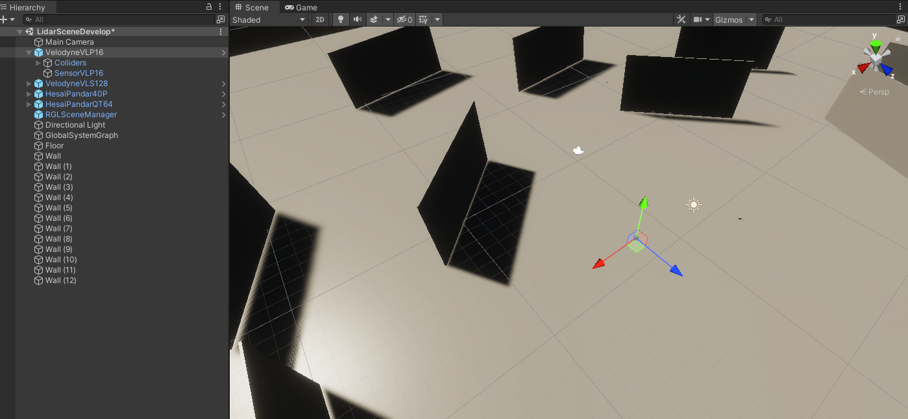
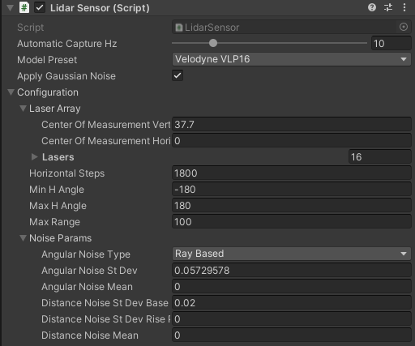
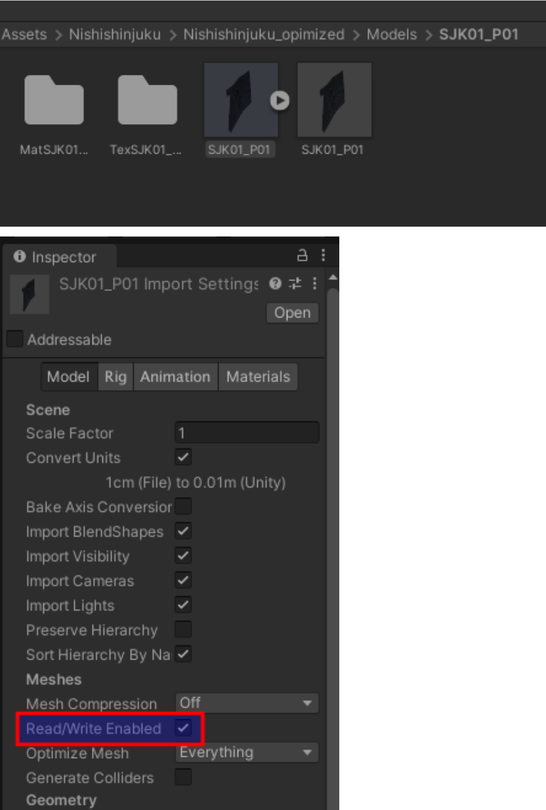

Sensors
VehicleStatusSensor
(prefab location, purpose of existence, link, screen)
- Vehicle Report Ros Publisher Script (inputs, outputs, topics, frame_id, qos)
RobotecGPULidars [70% current]
(prefab location, purpose of existence, RGL repository - hyperlink)
- Note: to use RobotecGPULidar, the scene must have Scene Manager Script (hyperlink)
- Lidar Sensor Script
- Available models (prefabs location, description of differences)
- Parameters (min/max h angle, max range, horizontal steps)
- Noise (type and params)
- Laser array configuration
- Output (Pcl24 vs Pcl48)
- Rgl Lidar Ros Publisher Script (topics, frame_id, qos)
- Point Cloud Visualization Script (points, colors, limits)
Lidar Sensor
AWSIM uses Robotec GPU Lidar, which is a cross-platform (Windows and Linux), RTX-accelerated, CUDA/C++ library developed by Robotec.AI. For more information about RGL library, visit its repository.
AWSIM is integrated with RGL out-of-the-box - using RGLUnityPlugin Asset.
ROS2 configuration
The following sections describe RGL configuration in AWSIM.
Published Topics
The table below shows topics published by RglLidarPublisher script.
| topic | msg | frame_id | hz | QoS |
|---|---|---|---|---|
/lidar/pointcloud |
sensor_msgs/PointCloud2 |
world |
10 |
Reliable, Volatile, Keep last/1 |
/lidar/pointcloud_ex |
sensor_msgs/PointCloud2 |
world |
10 |
Reliable, Volatile, Keep last/1 |
Output Data
The following table describes LidarSensor.OutputData struct used in Unity:
| field | type | feature |
|---|---|---|
| hitCount | int | Number of rays that hit any object |
| hits | Vector3 [ ] | Vertices for visualization in Unity's coordinate system |
| rosPCL24 | byte [ ] | Vertices for publishing Autoware format pointcloud in ROS coordinate system |
| rosPCL48 | byte [ ] | Vertices for publishing extended Autoware format pointcloud in ROS coordinate system |
Minimal scene example
The scene Assets/AWSIM/Scenes/Samples/LidarSceneDevelop.unity can be used as a complete, minimalistic example of how to setup RGL. It contains RGLSceneManager component, four lidars, and an environment composed of floor and walls.

RGLSceneManager
Each scene needs RGLSceneManager component to synchronize models between Unity and RGL. On every frame, it detects changes in the Unity's scene and propagates the changes to native RGL code. Three different strategies to interact with in-simulation 3D models are implemented. RGLSceneManager uses executes one of the following policies to obtain raycast hit:
Only Colliders- active colliders only,Regular Meshes And Colliders Instead Of Skinned- mesh for non-skinned MeshRenderers or set of colliders (if provided) attached to the rootBone and below for SkinnedMeshRenderers,RegularMeshesAndSkinnedMeshes- mesh for both MeshRenderer and SkinnedMeshRenderer.
Mesh source can be changed in the Scene Manager (Script) properties:

Note: RGLSceneManager performance depends on mesh source option selected.
Setup instruction
To configure RGL for new scenes, please:
- Create an empty object (name it RGLSceneManager).
- Attach script
SceneManager.csto the RGLSceneManager object.
Lidar models
Lidar prefabs typically consist of three scripts:
LidarSensor- provides lidar configuration and performs native RGL raytrace callsPointCloudVisualization- visualizes point cloud collected by sensorRglLidarPublisher- converts the data output from LidarSensor to ROS2 msg and publishes it
To use one of the prepared prefab lidars, drag the prefab file and drop it into a scene:

A lidar GameObject should be instantiated automatically:

Next, you can modify scripts parameters in Unity Inspector:
In LidarSensor script, the following configuration can be changed:
Automatic Capture Hz- the rate of sensor processingModel Preset- allows selecting one of the built-in LiDAR modelsApply Gaussian Noise- enable/disable gaussian noiseConfiguration- advanced lidar configuration (in most cases no need to change)Laser Array- geometry description of lidar arrayHorizontal Steps- the number of laser array firings betweenMin H AngleandMax H AngleMin H Angle- minimum horizontal angle (left)Max H Angle- maximum horizontal angle (right)Max Range- maximum range of the sensorNoise Params- lidar noise paramteres

In the script Point Cloud Visualization the material of points can be changed. If material is None then PointCloudMaterial from Assets/RGLUnityPlugin/Resources will be automatically loaded. You can disable visualization by deactivating the component.

Point Cloud Visualization preview:

In the last script - RglLidarPublisher - ROS properties such as topics names, frame IDs, publish activation or QoS settings can be modified:

Adding new lidar models
To add a new lidar model, perform the following steps:
- Add its name to the
LidarModels.cs - If the Lidar has a non-uniform laser array construction (e.g. different linear/angular spacing between lasers), add an entry to the
LaserArrayLibrary. - Add an entry to
LidarConfigurationLibrary. Use the provided laser array or generate a uniform one using static methodLaserArray.Uniform(). - Done. New lidar preset should be available via Unity Inspector.
Creating Lidar GameObject
To create GameObject (or prefab) containing lidar sensor, please perform the following steps:
- Create an empty object
- Attach script
LidarSensor.cs. PointCloudVisualization.cswill be added automatically, however, you can disable it.- Now you can add a callback from another script to receive a notification when data is ready:
lidarSensor = GetComponent<LidarSensor>(); lidarSensor.OnOutputData += HandleLidarDataMethod; - For publishing point cloud via ROS2 attach script
RglLidarPublisher.cs
Prefabs
The list of available prefabs can be found below.
| LiDAR | Path |
|---|---|
| HESAI Pandar40P | Assets/AWSIM/Prefabs/Sensors/RobotecGPULidars/HesaiPandar40P.prefab |
| HESAI PandarQT64 | Assets/AWSIM/Prefabs/Sensors/RobotecGPULidars/HesaiPandarQT64.prefab |
| Ouster OS1-64 | Assets/AWSIM/Prefabs/Sensors/RobotecGPULidars/OusterOS1-64.prefab |
| Velodyne VLP-16 | Assets/AWSIM/Prefabs/Sensors/RobotecGPULidars/VelodyneVLP16.prefab |
| Velodyne VLC-32C | Assets/AWSIM/Prefabs/Sensors/RobotecGPULidars/VelodyneVLP32C.prefab |
| Velodyne VLS-128-AP | Assets/AWSIM/Prefabs/Sensors/RobotecGPULidars/VelodyneVLS128.prefab |
Usage requirements
Objects, to be detectable by Robotec GPU lidar, must fulfill the following requirements:
- Contain one of the components:
Collider,Mesh Renderer, orSkinned Mesh Renderer. It depends on RGLSceneManager mesh source parameter. - Be readable from CPU-accessible memory. It can be achieved using the “Read/Write Enabled” checkbox in mesh settings. Note: Primitive Objects are readable by default.

RGL Unity side scripts
The following table describes the most essential lidar simulation scripts:
| script | feature | path |
|---|---|---|
| SceneManager.cs | Synchronize the scene between Unity and RGL. | Assets/RGLUnityPlugin/Scripts/SceneManager.cs |
| LidarSensor.cs | Lidar Sensor. Provide lidar configuration and collect point cloud. | Assets/RGLUnityPlugin/Scripts/LidarSensor.cs |
| PointCloudVisualization.cs | Visualize point cloud collected by lidar. | Assets/RGLUnityPlugin/Scripts/PointCloudVisualization.cs |
| RglLidarPublisher.cs | Convert the data output from LidarSensor to ROS2 msg and publish. | Assets/AWSIM/Scripts/Sensors/LiDAR/RglLidarPublisher.cs |
IMUSensor [50% current]
(prefab location, purpose of existence, link, screen)
- Imu Sensor Script (gravity, output)
- Imu Ros Publisher Script (topics, frame_id, qos)
IMU Sensor
The document describes inertial measurement unit sensor simulation component.
Prefabs
Path : Assets\AWSIM\Prefabs\Sensors\IMUSensor.prefab
Scripts
All the most important scripts can be found under the Assets\AWSIM\Scripts\Sensors\Imu\*
The table below describes features contained in each provided script:
| script | feature |
|---|---|
| ImuSensor.cs | Core Inertial Measurement Unit Sensor. Measures the Acceleration(m/s^2) and AngularVelocity(rad/s) based on the Transform of the GameObject to which this component is attached to. |
| ImuRos2Publisher.cs | Converts the data output from ImuSensor-specific struct to ROS2 message and publishes it. |
Output Data
The following table describes ImuSensor.OutputData properties:
| field | type | feature |
|---|---|---|
| LinearAcceleration | Vector3 | Measured acceleration (m/s^2) |
| AungularVelocity | Vector3 | Measured angular velocity (rad/s) |
Published Topics
The data output is published to the following topics:
| topic | msg | frame_id | hz | QoS |
|---|---|---|---|---|
/sensing/imu/tamagawa/imu_raw |
sensor_msgs/Imu |
tamagawa/imu_link |
30 |
Reliable, Volatile, Keep last/1000 |
GnssSensor [50% current]
(prefab location, purpose of existence, link, screen)
- Gnss Sensor Script (MGRS, output)
- Gnss Ros Publisher Script (topics, frame_id, qos)
GNSS Sensor
GNSS senor is a component which simulates the position of vehicle computed by the Global Navigation Satellite System. The GNSS sensor outputs the position in the MGRS coordinate system.
Prefabs
The component prefab can be found under the following path: Assets\AWSIM\Prefabs\Sensors\GnssSensor.prefab
Scripts
All the most important scripts can be found under the `Assets\AWSIM\Prefabs\Sensors\Gnss\* path.
The table below describes features contained in each provided script:
| script | feature |
|---|---|
| GnssSensor.cs | Core GNSS sensor. Publishes pose and poseWithCovarianceStamped in MGRS coordinate system. Requires MgrsReference of the Environment for the output data conversion. |
| GnssRos2Publisher.cs | Converts the data output from GnssSensor to ROS2 message and publishes it. |
Output Data
The following table describes GnssSensor.OutputData properties:
| field | type | feature |
|---|---|---|
| MgrsPosition | Vector3 | Position in the MGRS coordinate system. |
Published Topics
The data output is published to the following topics:
| topic | msg | frame_id | hz | QoS |
|---|---|---|---|---|
/sensing/gnss/pose |
geometry_msgs/Pose |
gnss_link |
1 |
Reliable, Volatile, Keep last/1 |
/sensing/gnss/pose_with_covariance |
geometry_msgs/PoseWithCovarianceStamped |
gnss_link |
1 |
Reliable, Volatile, Keep last/1 |
CameraSensor [10% current]
(prefab location, purpose of existence, link, screen)
- Camera component (https://docs.unity3d.com/Manual/class-Camera.html)
- Camera Sensor Script (parameters, output, gui - screen)
- Distortion shader (what is it and where is it located)
- ROS image shader (what is it and where is it located)
- Camera Ros Publisher Script (topics, frame_id, qos)
- Impact on the traffic lights recognition in autoware
Camera Sensor
The following document describes Unity component used for camera simulation. The CameraSensor component is used for Autoware traffic light recognition.
Prefabs
The component prefab can be found under the following path: Assets\AWSIM\Prefabs\Sensors\CameraSensor.prefab
Scripts
All the most important scripts can be found under the Assets\AWSIM\Prefabs\Sensors\CameraSensor\* path.
The table below describes features contained in each provided script:
| script | feature |
|---|---|
| CameraSensor.cs | Core camera sensor component. It is responsible for applying OpenCV distortion and encoding to bgr8 format. Uses ComputeShader. |
| CameraRos2Publisher.cs | Converts the data output from CameraSensor to ROS2 message and publishes it. |
Output Data
The sensor computation output format is presented below:
| field | type | feature |
|---|---|---|
| ImageDataBuffer | byte[ ] | Buffer with image data. |
| CameraParameters | CameraParameters | Set of the camera parameters. |
Published Topics
The data output is published to the following topics:
| topic | msg | frame_id | hz | QoS |
|---|---|---|---|---|
/sensing/camera/traffic_light/camera_info |
sensor_msgs/CameraInfo |
traffic_light_left_camera/camera_link |
10 |
Best effort, Volatile, Keep last/1 |
/sensing/camera/traffic_light/image_raw |
sensor_msgs/Image |
traffic_light_left_camera/camera_link |
10 |
Best effort, Volatile, Keep last/1 |